I'll let you go this time
Last Update 2026.07.28
ここでは、ちょっと珍しい・・・かも知れない基板を適当に載せてみます。
MCC-158
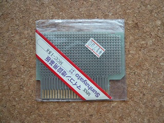
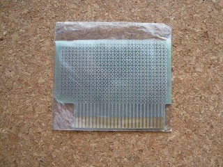
おなじみサンハヤトの基板ですが、MCC158はケースに固定するためのボス穴がありません。 そのためか、秋葉原でも長い間売れ残っており、私が最後の一個を購入したのは2013年の ことでした。
MCC-159
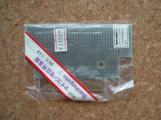
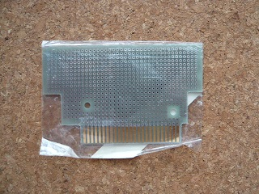
こちらが一番有名かも知れません。ケースとセットで売られていたものもあります。
UK-25PA-76R
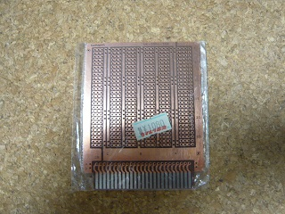
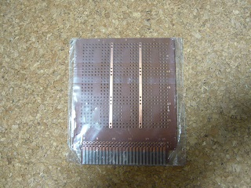
MSX用かどうか分かりませんが、とりあえず使えそうな基板。PC-6001等も似たようなインターフェースを持っていた？
MCC-159互換品 Ver.M
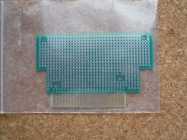
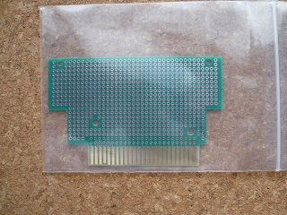
MCC-159の互換品として今でも入手可能な基板です。SW端子あたりはMCC-159よりも きちんとMSXの規格に準拠しています。
Breadboad Kit
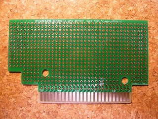
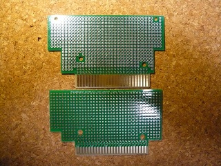
REPRO FACTORYさんで売られているBreadboard Kitの基板です。基板ｘ２、ケースｘ１のセットですが、珍しいことに基板とケースはコナミの基板と互換製があります。右の写真の上がM.A.D.さんの基板、下がREPRO FACTORYさんの基板です。
ユニバーサル基板 Ver.O
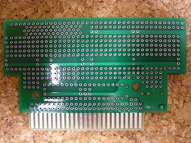
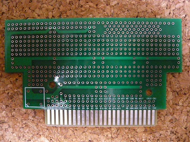
個人で作られたものです。穴の位置がちょっとずれていて、上のMCC-159互換品よりもちょっと傾きます。実用上は問題ないでしょう。
ROM基板キット（SPB001）
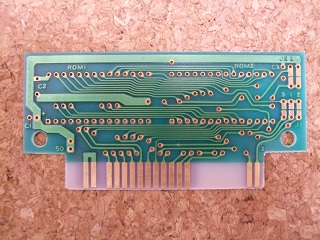
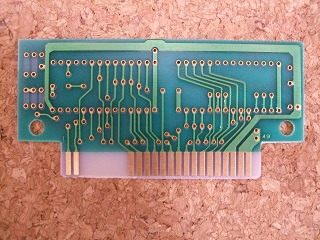
おなじみエミール・ソフト開発のROM基板キットです。自作のソフトをカートリッジ化するための基板。メガROMには対応していません。ケース付きで1000円というのは当時にしては（今でも？）とても安いです。
Quick Disk？
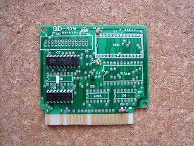
どこでどう入手したのかも覚えていません(^^; たぶん、秋葉原でジャンク基板として入手。 QD-ROMと書かれていたので、「Quick Disk MSX」で検索したところ、UP-CさんのサイトにCASIO QD-7の分解写真が載っており、カートリッジ側の基板が非常に似ているのですが、微妙に違います。バージョン違いなのか試作品なのか、とりあえず謎な基板でした。
FS-CF351
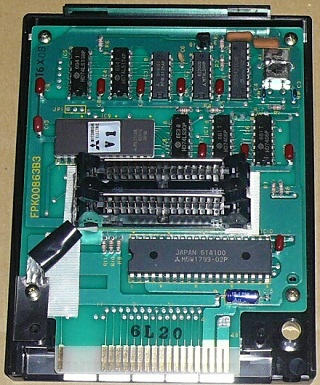
Nationalのフロッピーディスクインターフェースです。写真を頂きました
意外と・・・シンプル？
FS-FD1A
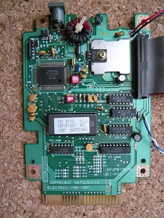
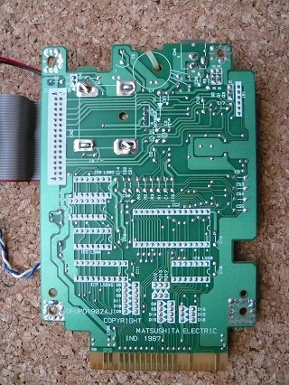
Panasonicのフロッピーディスクインターフェースです。
HBD-F1
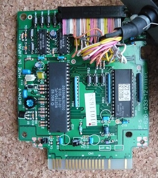
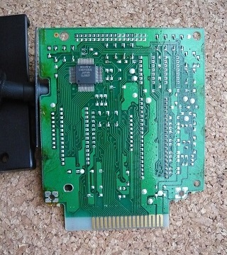
ご存じSONYのフロッピーディスクインターフェースです。
HBD-20W
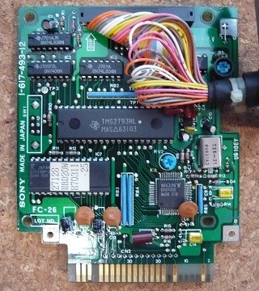
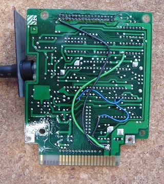
ご存じSONYのフロッピーディスクインターフェースです。機能はHBD-F1と同じはずですが、基板は結構違います。
FDC600
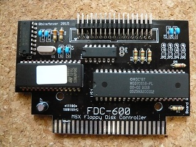
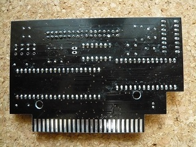
FDCインターフェースです。PC用の2HDドライブが特に改造無しで使えるようです。勿論、メディアは2DD/1DDしかMSXでは使えません。SWピンがジャンパされているのがお茶目です。
Emu-FDC
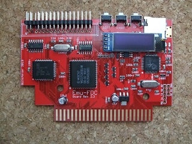
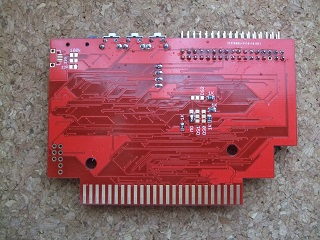
FDCインターフェースとFDDエミュレーターを1ドライブにした製品です。
Floppy Disk Drive Interface
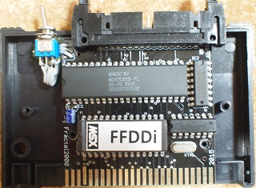
一見、コンデンサが一つしか無いように見えますが、裏にチップコンデンサがいくつか載っています。
eBayやBEEP秋葉原さんで入手出来るようです。eBayの方が安いですが、敷居が高い人はBEEP秋葉原さんの方から買う方が早いです。BEEP秋葉原さんのにはeBayの方に付いているメディアが付属していないようです。メディアの中身は不明ですが、単なるMSX-DOSなのかも知れません（大人の事情で付属できない？）。取扱説明書もありませんが、eBayでの説明によるとスイッチはドライブを2台つないだときにA:ドライブとB:ドライブを入れ替えるためのもののようです。
自作FDD Interface
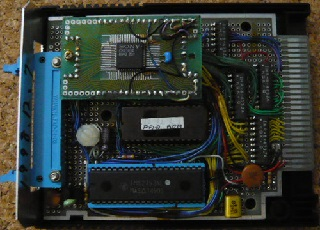
以前、ヤフオクに出品されていたFDDインターフェースです。20年くらい前の代物のようです。最近発売されたFDDインターフェースの基板に比べると配線量がすごいです。
FDD？
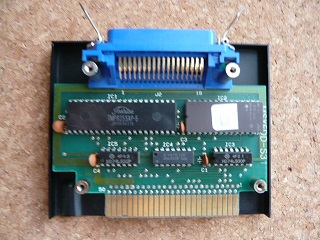
これもどこでどう入手したのかも覚えていません(^^; たぶん、秋葉原でジャンクとして入手。MSXFDDと書かれているでFDDインターフェースなのでしょう。アンフェノールフルピッチ36ピンコネクタとは。筐体はアルミで手作り（試作品）感が否めないのですが、基板は量産品。
とりあえず謎な基板でした。
拡張スロット Ver.T
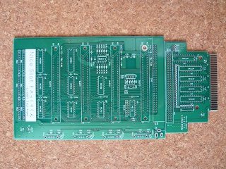
拡張スロット「Nice Slot さっくりくん」の基板のようです。謎ではないですね(^^;
拡張スロット Ver.O
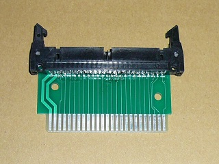
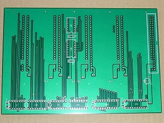
ヤフオクで売られていた外部電源不使用の拡張スロットの基板です。外部電源を使わないためか他の拡張スロットと較べてシンプルです。
拡張スロット Ver.M
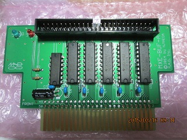
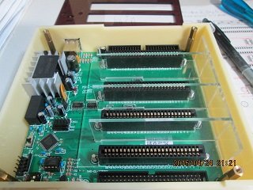
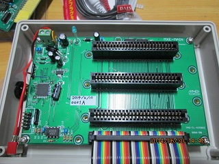
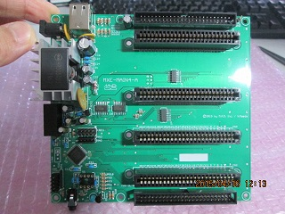
どんどん謎では無くなってきますが、電子部品通販 M.A.D.さんにお願いして写真を頂きました。M.A.Dさんで売られている拡張スロットです。左上がバッファ基板、右上がよんすろっとをケースに収めたところ、左下がさんすろっと、右下がよんすろっとの基板です。
拡張スロット Ver.H
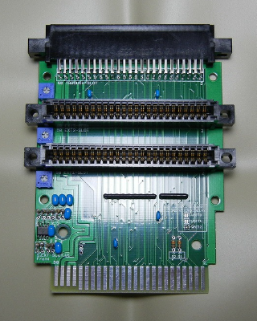
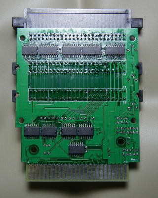
写真掲載の許可を頂きました！ヤフオクで売られていた外部電源不使用の拡張スロットの基板です。Ver.Oとは別の方です。拡張スロット選択レジスタが無い簡易拡張スロットとのことですがバッファー回路が組まれていたり。音声もオペアンプでミキシングされていたりとかなり丁寧に作られています。
拡張スロット Ver.S
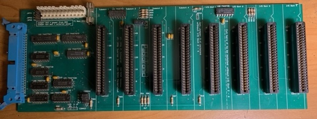
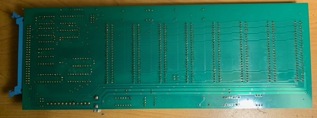
Mr.Fredericから写真を頂きました。Sunriseの拡張スロットのようです。特筆すべきは8スロットサポート！といっても、すべてのスロットに/SLTSLがきているわけではなく、4個はI/Oのみで使用するカートリッジ用のようです。
増設メモリマッパー Ver.N
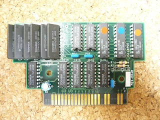
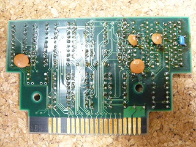
某プロジェクトで販売していたものです。一時期、基板がジャンクで流れていましたが、GALを使っているので基板を入手しても簡単には作れないでしょう。私は当時2MB版を購入したところ、空きパターンがあったのでメモリを増設して3MBにしています。メモリが基板からはみ出してしまうので、ケースの内側を彫刻刀で削りました。
増設メモリマッパー Ver.G
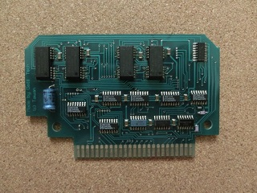
写真を頂きました。オランダのMSX Computer Club Goudaで作られていた増設メモリです。
増設メモリマッパー Ver.T
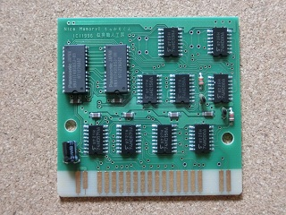
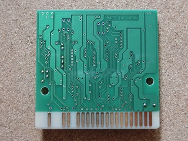
似非職人工房さんから写真を頂きました！うっかりくんです。整然として美しいです。同じ機能のものでも作り手や時代によって色々変わるのは面白いです。
増設メモリマッパー Ver.O
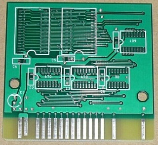
ヤフオクで売られていた増設メモリマッパーの基板です。512kBのSRAMを使うのでシンプルです。ただ、SRAM自体が高いので最大2MBという設計のようです。
増設メモリマッパー Ver.M
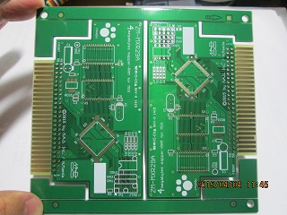
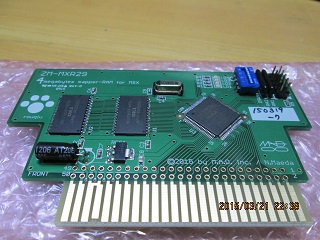
こちらも電子部品通販 M.A.D.さんにお願いして写真を頂きました。増設メモリマッパーの基板です。CPLDを使っているタイプは珍しいです。メモリマッパーレジスタの読み込みが可能なモードとか隠し機能がいくつかあるようです。
増設メモリマッパー Ver.C
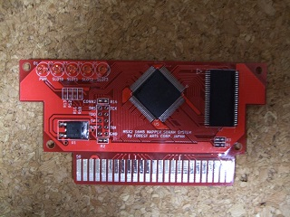
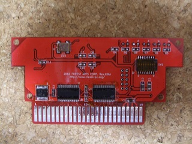
クラシックPC研究会さんが販売されていた16MBのメモリマッパーカートリッジです。内部でスロットを拡張しているので、基本スロットでしか16MBは使えないようです。裏面のDIPスイッチ1をOFFにすると4MBモードになって拡張スロットでも使えるようです。スピコンやポーズにも対応していますが、クロックアップをしている機種のためにリードに1WAITを入れているようで、他のメモリと比べて若干遅いようです。体感で分かる人はいないと思います。
16MBを使い切るようなソフトは・・・にがさんが作られた大容量マッパメモリ対応PCMプレーヤーくらいでしょうか。
MEGA-SCSI Ver.T
似非職人工房さんから写真を頂きました！オリジナルMEGA-SCSIです。基板のコストは基板のサイズに左右されます。そういう意味で実にコンパクトに設計されています。
ヤフオクで出品されたMEGA-SCSI互換基板を頂きました！鬼の配線から解放されそうです。問題は、SCSI機器があまりないこと？と思ったらSCSIコネクタの近くの2列の50ピンのパターン(2mmピッチ)にSDカードスロット子基板をつけられるとか！
NEW!!
ヤフオクで出品されたMEGA-SCSI互換基板の改良版です。SCSI=>CFカード変換使用時に発生するハングアップ問題をハード的に対策しています。右上にはSRAM切り離しスイッチ、8kB=16kBバンク切り替えスイッチがついています。隠し機能でSCSI機能を無効にして1MBまでのゲームROMをインストールできるようになるとか！
こちらも電子部品通販 M.A.D.さんにお願いして写真を頂きました。MEGA-SCSI互換基板です。こちらもSCSIコネクタの近くにSCSIの50ピン(2.54mmピッチ)のパターンがあります。
基板を頂きました。世界初？のWAVE-SCSIの互換基板です。KONAMIのSCC付きゲームからメガロムコントローラを移植する必要があります。
似非RAM互換基板 Ver.H
写真掲載の許可を頂きました！ヤフオクで売られていた似非RAM互換基板です。ゲームカートリッジを改造した方が早いかも知れませんが、ゲームカートリッジを壊さないのも重要。大容量化も比較的容易なのでしょう。
こちらも電子部品通販 M.A.D.さんにお願いして写真を頂きました。似非RAMや似非ROMになり、ひょっとしたらコナミのメガロム互換にもなるかも・・・？ただしSCC音源にはなりません。
似非RAMDisk MAXIMUM
にがHPさんで開発された似非RAMディスク互換基板。世界初の2MBの似非RAMDISK。一般的なケースとコナミのケース両方に対応したのも世界初だと思われます。
MEGASCC-SST Verの基板
Illegal function callさんがリリースしたMEGASCC-SST Ver基板です。MEGA FLASH ROM SCCではAM29F040系のFLASH ROMを使用しますが入手が難しく、比較的入手が容易なSST39FS040を使用するための基板です。SST39FS040ではそのままだと書き込むためのアドレス指定がメガロムコントローラのバンクアドレスと重複してしまうため、アドレス線を入れ替えることで対応しています。
MEGASCC-RAM8Mbitの基板
一般的に公開されている似非SCCでは512kByteまでしか対応していないため、1MByte(=8Mbit)まで拡張してディスク1枚入るようにした基板です。従来の似非SCC(1MB対応)と互換性が無いため、似非SCCディスクとして使用する場合は別途パッチが必要となります。
似非SCCDisk MAXIMUMの基板
にがHPさんがリリースした1MB版の似非SCCDiskです。1MB版の似非SCCはWAVE-SCSIからSCSI機能を削除した物で、従来からあるMGINST、MGSAVE等が対応していますが、MGLOADはバグがあり対応していません。NGLOADが代わりに使用可能です。
似非MMCディスク
似非MMCディスクの試作基板のようです。
MEGA-SD
基板には似非MMCディスクと書かれていたりします。きちんとした基板ですが、実際に販売されてはいないようです。
似非SDisk
にがHPさんで開発されたものです。拡張スロット上でも動くところが利点です。
MEGA FLASH ROM SCC+ SD
ヨーロッパで売られているものです。FLASHROM、スナッチャー互換SCC音源（スナッチャー、SDスナッチャーはRAMが無く動作不可）、SDカードスロット対応。裏面には512kBのメモリマッパ。内部でスロットを拡張しています。MSX Cartridge Shop, KAI MAGAZINEのゲームで同じ基板が使われていることがあるようです。
MEGA FLASH ROM SCC+ USB
MEGA FLASH ROM SCC+ SDの基板を改造してUSBポートを取り付けたもののようです。小さい基板はLED基板でアクセス時に光ります。
SD-512
最近発売されたSDカードインターフェースです。SWで512kBのメモリマッパのON/OFFができるようです。OSはNEXTOR。写真は初期ロット(Rev.1.0)でスロットが1個ですが、Rev.1.5からはケースが半透明で裏側にmicro SDカードスロットがあります。Rev.1.0の基板でも増設できますが、CPLDの8pinをGNDにつなげないとRead Onlyになってしまいます。また、スイッチを取り付けるパターンがあり、MEGA RAMなるものになるようです。
SD MapperMegaram
BEEP SHOPさんで扱っているSDカードインターフェースです。基板を見ても分かるとおり、8bits4ever!さんのものとほぼ同じです。SDカード通常サイズx2なのと、しっかり奥まで入るのがちょっと違います。SWで512kBのメモリマッパのON/OFF、MEGA RAMへの切替ができるようです。
METAL DRAGON
これはSDカードインターフェースとして売られている物ではなく、METAL DRAGONというゲームで使われている基板です。SDカードにゲームを入れています。前出のSD-512やSD MapperMegaramと同じ設計で、GitHubで公開されているmsxsdmapper（v2ではないほう）になります。Nextorも含んだカーネルがここでも入手できます。SD-512やSD MapperMegaramもですが、何故かNEXTOR 2.1.0 Alpha2がインストールされており、他の新しいNextorカーネルが使われているカートリッジと同時に挿すと相性が悪いです（出荷時期によるのかも知れません）。また、4GBのパーティションも使えないようです。GitHubには2.1.0 Beta2のカーネルもあるので、それにUpdateすることができます。最後の16kBがDrive.binというSDカードのドライバ部分なので、それと、Nextor 2.1.0（正式版）とくっつけて使う事もできます。ちなみに、METAL DRAGONのSDカードをSD-512に入れてもゲームが起動したりします。ゲーム自体がV9990を必要とするので購入する人は少ないと思いますが、55EURO＋15.8EURO（送料）なので、SDカードインターフェースとしては安く購入することができます。
Rookie drive NX
SDカードインターフェース同様にUSBメモリ内にファイルを置くことができますが、ディスクイメージを置いて使う、Floppy Disk Emulator的な使い方もできます。また、USBフロッピーディスクドライブも接続できるようになりました。
CF-640
最近発売されたCFカードインターフェースです。SunriseのIDEカートリッジの互換品とのことです。
Sunrise ATA-IDE
写真を頂きました。Sunrise製のIDEカートリッジです。
MSX Cartridge Shop
MSX Cartridge Shopのゲームで使われている基板です。大容量のゲームではMEGA FLASH ROM SCC+ SDと同じ基板のようですが、小容量のゲームではこのような基板を使うようです。
Konami Flash Kit①
海外の方から基板をいただきました！REPRO FACTORYで扱っているKonami Flash Kitの基板です。コナミのSCC無しメガロムゲーム互換のようです。
Thanks to Mr.Eduardo!
Konami Flash Kit②
HIKARU GAMESさんのChildren of the Nightで使われている基板です。基板としてはKonami Flash KitのRev.Up版のようです。チップ抵抗をまとめて集合抵抗にしているのが大きな違いです。
HIKARU GAMES
HIKARU GAMESさんのMultiverseで使われている基板です。前作から基板の供給元？を変えたのでしょうか。
Myths And Dragonsの基板
KAI MAGAZINEさんのところで扱っているゲームの基板です。ジャンパで色々設定を変えられるようです。ONIRICさんのAWAKENINGもこの基板です。
THE SORROW OF GADHLAN' THURの基板
KAI MAGAZINEさんのところで扱っているTHE SORROW OF GADHLAN' THURの基板です。こちらもジャンパで色々設定を変えられるようですがちょっと無駄に大きい？
ANGELIC WARRIOR DEVAの基板
built-in S-RAMと書かれていたのですが、S-RAMとBatteryを積んでいるわけではなく、FLASH ROMにセーブするようです。
Night Knightの基板
poly.playのNight Knightの基板です。最近は独自基板のゲームも増えています。
五条大橋の基板
MATRA COMUPTER AUTOMATIONSさんのところで扱っている五条大橋の基板です。なぜかROMのシルクが削られている？ちなみにMATRA COMPUTER AUTOMATIONSさんのケースは怒のケースに酷似していますが、別物です。
Bitlogicの基板
MATRA COMUPTER AUTOMATIONSさんのところで扱っているOXIAB GAME STUDIOのゲームの基板です。フルカラーのLEDを搭載していてゲーム中にも色が変わる楽しい基板です。
Gaming LED Cartridge
Illegal function callさん作成のGaming LEDカートリッジです。LEDの色がカラフルに変化します。HRA!さん作成のMGSPやRabbit Adventureが対応しています。
REPRO FACTORY製ゲームの基板①
REPRO FACTORY製のゲームで使われている基板です。64kBまで載るようですが、ページ切り替えの回路が無いので、実際に使えるのは32kBまでかも知れません。
REPRO FACTORY製ゲームの基板②
REPRO FACTORY製のゲームで使われている基板です。共通基板で用途に合わせてジャンパで切り替えられるようですが、詳細は不明です。
REPRO FACTORY製ゲームの基板③
REPRO FACTORY製のゲームJOYSEで使われている基板です。SN76489を搭載しています。
大仏パラダイスの基板
ニャオニャオ21世紀さん開発の大仏パラダイスの基板です。
ILEVANの基板
Tulip Houseさんから発売されたILEVANの基板です。他のゲームは出されていないと思いますが、今後の拡張性が考えられている感じです。カセットテープのケースにボンドで貼り付けている珍しいタイプです。
INFERNOの基板
AETHERBYTEさんから発売されたINFERNOの基板です。ILEVANの基板に似ています。ケースは3Dプリンタで作られている珍しいタイプです。
ゲームインパクトさんの基板
写真を頂きました。ゲームインパクトさんから発売されたTINYドラキュラの城の基板です。ゲーム自体は32kBのようですが、64kB以下のFlashROMが無かったと思われ、128kBのFlashROMを使用しています。通常のケース及びコナミケースに対応した基板になっています。
似非ROM基板
にがHPさんで開発された似非ROM基板です。写真はプロトタイプでEPROM用のソケットを取り付けてあり2MBまでのEPROMが搭載できます。製品では512kBのFlashROMが実装されています。
似非ROM基板LC
にがHPさんで開発された似非ROM基板のLow Cost版です。512kBのFlashROMが実装されています。
Franco-Russianの基板
Mr.Fredericに写真をいただきました。Franco-Russianの基板とのこと。ASCIIのLZ93A13を移植して使う基板のようです。
クロスブレイム
64kBなのでメガロムではありませんが、バンク切り替えは必要だったりします。
ケンペレンチェス
メガロム基板のうち、珍しい物を載せてみます。メガロムデータベースの基板名を見る限りでは、ケンペレンチェス以外にこの基板は無いようです。
スーパーロードランナー
tyr105さんから写真を頂きました。1987年にアイレムから発売。メガロムコントローラーを使っていないメガロム基板。これもメガロムデータベース上、他にこの基板を使ったゲームは見つかりませんでした。
R-TYPE
スーパーロードランナーの1年後の1988年にアイレムから発売。今回は独自のメガロムコントローラーを使用。この独自のメガロムコントローラーを使用したMSXのゲームはR-TYPEだけですが、1987年頃に発売された「快傑ヤンチャ丸」というファミコンのゲームでも使われているとのことです（uniabis様、情報ありがとうございました）。
怒ＩＫＡＲＩ
SNKのMSXソフトはこれだけだと思うのですが、ケース、基板、メガロムコントローラー、すべて独自ですごいです。
ウィザードリィＩ
限定ROMですが、基板は独自のものです。意外とお金をかけていたのですね。
NHK学園パソコン講座No.4
こちらも写真を頂きました。No.4は数が出ているのかニコニコ動画でPlay動画?があります。No.4は"総復習編"で、No.2が"音楽コース"、No.1が"入門コース"という噂がありますが、それ以外はまったく分かりません。上側にEPROMが2個載っており、メガロムであろうとは思うのですがよく分からず。8kBのSRAMも載っているようです。
ジャガー5
こちらも写真を頂きました。8kバンクの基板を製品と同じ16kバンクの基板に変更してEPROMを載せています。試作品つながり・・・と思ったのですが、デモ版かもしれません。中身が製品版と異なっていて、いきなり5人だったりするそうな？
スーパーレイドック
こちらも写真を頂きました。基板は製品と同じようですが、製品では256kBのROMなのに128kBのEPROMが載っています。内容もタイトル=>オープニング=>プレイデモ=>発売日などの告知をループするものでゲームは遊べない、完全な店頭用デモとなっているそうです。
BOMBARKIG?
こちらも写真を頂きました。製品版のBOMBERKINGは通常サイズですので、恐らく試作品なのでしょう。中身は製品版と同じだったそうです。
アシュギーネ 虚空の牙城
BONBERKINGの試作品と同じメガロム試作基板です。こちらも中身は製品版と同じだったそうですが、ケースがついているのが珍しいです。このケースは・・・アラブのコーランカートリッジと同じような・・・？
アラブのゲームを借用できたので見てみましたが・・・ケースも基板も日本のMSXと同じでちょっと残念でした。もちろん一例だと思いますが。
HALNOTE (旧)
写真を頂きました。教育ソフトや実用系のソフトは高いこともあり、あまり売れなかったのでしょう。ヤフオク等でも中々見かけません。基板には「HAL ENGINE II」と記載されています。
HALNOTE (新)
写真を頂きました。こちらの基板には「HAL ENGINE III」と記載されています。前述のHAL NOTE(旧)とはケースが異なるために基板を作り直しただけかもしれません。さらに「HAL ENGINE I」の基板も存在しているのかも知れません。
HALSCAN
HALNOTEと一緒に写真を頂きました。PCに絵を取り込める機能にはすごくあこがれていました。今でも第一線のHAL研究所はすごいですね。
日本語MSX-DOS2 (256kB版, 旧)
写真をいただきました。MSX-DOS2のカートリッジはRAMなし版、128kB版、256kBと3種類あり、これは256kB版の旧バージョンです。256kB版にはMEM768と共通の基板を使用した新バージョンも存在していますが、写真が入手できていないのとMEM768の基板写真は載せているので割愛します。
MSX-WRITE その1
写真をいただきました。「基板が」大きいメガロム基板・・・。第一水準漢字ROMも内蔵。
MSX-WRITE その2
↑から部品点数を削減したバージョンのようです。
MSX-WRITE II その1
↑で減った部品が第二水準漢字をサポートするためにまた増えています。
MSX-WRITE II その2
写真をいただきました。↑のMSX-WRITE IIの基板とは微妙に変わっており、間違い探しレベルです。
HBI-J1
こちらも写真を頂きました。HBI-J1で画像検索をかけると広告にはメガロムマークがついているのですが、カートリッジ自体にはついていないようです。MSX-Writeもメガロムマークがありますが、あれはワープロソフトも内蔵していたからかも知れません。HBI-J1がMSX-JEの機能しか持っていないのならメガロムでは無いのかも。（漢字ROMは128kB以上あってもアクセス方法が違うのでメガロムとは呼ばれない？）
MSX2用ワープロカートリッジ
FS-SR021
第二水準まで入っています。初めて見るメガロムコントローラー？です。
文節変換熟語ユニット
FS-SR022
FS-SR021はPanasonicブランドで1988年発売のFS-A1WX相当のMSX-JE対応のワープロソフトでしたが、FS-SR022はNationalブランドで1985年発売。FS-4000専用の文節変換カートリッジですが、MSX-JEではありません。一般的には小さい番号の製品が先に発売されるようにも思うのですが・・・謎です。
ワープロプリンタ・インターフェース
FS-PW1
こちらは専用プリンタとセットの製品です。第一水準までしか入っていません。価格を抑えたモデルだったのでしょうか。
CF-2000専用プリンタ・インターフェース
CF-2121
写真をいただきました。プリンタポートのカートリッジは比較的珍しいです。CF-2000以外でも使えるのか分かりません。
漢字ワードプロセッサ
CF-SM003
NEW!!
写真をいただきました。MSX Resource Centerによると構成はYAMAHA SKW-01やSanyo KA-MAP-06と同じらしいです。SKW-01とMAP-06は特殊インターフェースなので変換カートリッジが必要になりますが、CF-SM003はプリンタポートを削除して1つのカートリッジに納めています。
絵はがき用ワープロ
今、昔のワープロとかを使うとストレスなのでしょうねぇ・・・。
ミセスパック
写真を頂きました。家計簿、カレンダー、メモ帳、電卓、漢字ROM機能をもっているようです。ケースはFM-PACや48ドット毛筆書体カートリッジと似ているのですが、よく見ると基板が長いので微妙に違うようです。
ジュニアメイト
写真を頂きました。ミセスパックと同じ基板のようです。教育ソフトを内蔵しているようです。電話番号帳、予定表、漢字ROM機能をもっているようです。
日本語ワードプロセッサ
写真を頂きました。コナミが販売していたワープロソフトです。と言っても基板にはCANONのロゴが入っています。珍しくコナミがOEM供給を受けていたようです。
漢字ROMカートリッジ
写真を頂きました。コナミのワープロソフトに付属している漢字ROMです。こちらも基板にはCANONのロゴが入っています。
SONY製漢字ROM
漢字ROMはワープロソフトやMSX-JEに内蔵されていることが多く、単体の漢字ROMはあまり見かけません。単体での使い道はあまりないので、商品化しにくかった、もしくは売れなかったのかもしれません。
Victor製漢字ROM
Victor製の漢字ROMです。MSX1用のスーパーインポーズ用テロップソフトのROMカートリッジと一緒に使うようです。裏面の改造は第二水準対応をしようとして途中で止めたようです。
東芝製第一水準漢字ROM HX-M200
写真をいただきました。東芝製の漢字ROMです。前述のVictor製の漢字ROMと同じ基板だったりします。
漢字FlashROM
にがHPさんで開発された漢字FlashROMです。同人の漢字ROMは珍しいです。スロットに挿入して使用する以外にも、Z80 CPUを搭載している本体では（MSX Engine等の統合チップは不可）、Z80と本体基板の間に実装することにより本体に内蔵して使用できるような基板になっています。
漢字FlashROM DX
にがHPさんで開発された漢字FlashROM DXです。通常の漢字ROMに加えてMSX-View用の漢字ROMも搭載できるようになっています。MSX-View用漢字ROMの代わりにメガROMゲームを書き込むこともできるようです。漢字FlashROMと異なり、本体内蔵はできない基板です。
48ドット毛筆書カートリッジ
EBIRAさんからの借用品。数少ないメガバイト（＝8メガビット）基板です。ちなみにブランドはNational。使い方は・・・分かりません(^-^;
ROM HUNTER mkII
こちらも借用品。メガロムエミュレーターとでもいうのでしょうか。メモリマッパにもなるようです。
MEM768
こちらも借用品。左から4番目と8番目のDRAMはEBIRAさんが取り付けた物で、ROMソケットとジャンパは私が取り付けたものです。全部載せてしまうと動作が不安定に・・・。
DAM BUSTERS
このまま別の機器に差し込んで書き込める仕様なのか・・・意外と謎な基板でした。アメリカントラックも同じ基板のようです。
TAKERUで売られていたROM
EPROMを載せた基板つながりで・・・大昔のTAKERUはROMも販売していました。もちろん、その場で書き込む方式でした。
MSX FAN読者プレゼント
写真を頂きました。EPROMを載せた基板つながりで・・・MSX FANの読者プレゼントとのことです。「たこの海岸物語」三部作のPart3のROMです。しまづ☆どんきさんのイラスト・・・でしょうか？
交通ヒヤリ・ハットゲーム
一部でプレミアがついている、千代田火災海上保険株式会社のゲームをお借りしました。基板としては・・・多分珍しくないのでしょう。（メガロム以外のゲーム基板はあまりチェックしていないのでよく分からず(^-^;
BEE PACK
HUDSONからPC Engineのようなカードタイプのソフトが販売されており、それを使うためのアダプタ基板です。
Holy Quran
海外のMSXユーザーからも写真を頂きました。海外のコーランカートリッジです。右の二つがROM（512kBx2）で、左にあるのがYAMAHA製のメガロムコントローラのようです。ROMのデータ線はスロットにはつながっておらず、メガロムコントローラにつながっています。メガロムコントローラが何らかの暗号化処理を出力しているようです。ラダー抵抗はDACではなく、単なるPull-up抵抗のようです。
イーガー皇帝の逆襲
こちらも写真を頂きました。３本開けて、１本は普通のROMが載っていたそうですが、残りの２本はこの写真のようになっていたそうです。ベアチップ実装というらしいです。コスト削減で使われるらしく、ゲーム機の偽物で使われているイメージを持っていたのですが、コナミのゲームでも普通に使われていたのですね。
コナミのゲームを10倍たのしむカートリッジ
コナミつながりで・・・意外とシンプルで普通です。特別なチップは載っていないようです。
コナミの新10倍カートリッジ
さすがに新10倍はちょっと複雑になっています。
コナミの新10倍カートリッジ互換基板
Illegal function callさん作成のMSX用 KONAMI4互換 Flashカートリッジ 似非RC755 (1Mbit+FRAM) です。SRAMの代わりにFRAMを使っているので電池要らず！
牌の魔術師
音声再生用のDACを搭載しています。0101 xxxx xxxx xxxxb (5000-5FFFh)に8bitのデータを書き込むと音が鳴るようです。
新世SIZER
こちらも写真を頂きました。特別なチップは載っていませんが、DACを搭載しています。01xx xxxx xxx0 xxxxb (4000h等)に8bitのデータを書き込むと音が鳴るようです。
フリートコマンダー２
こちらも写真を頂きました。メガロムコントローラは外してしまっています。フリートコマンダー２で音声再生等をしているという話は聞いたことが無いのですが何故かDACを搭載しています。何に使っているのでしょうか。バンク80h以降に8bitのデータを書き込むと音が鳴るようです。
プレイボール
1986年にSONYから発売された音声再生をする野球ゲームです。NECのD7756Cが5～8KHzのサンプリング周波数で録音されたデータをされた9bitデータをADPCMで再生しているようです。BFFFhに鳴らしたいトラック番号を書き込むと再生されます。00h～0Ehの15種類の音声があるようです。
燃えろ!!熱闘野球'88
1987年にジャレコから発売されたファミリーコンピュータ版「燃えろ!!プロ野球」のMSX移植版でタイトル通り1988年発売です。こちらもNECのD7756Cが音を鳴らしています。プレイボールと違ってD7756C周辺の回路 (音声出力回路) が結構簡略化されています。バンク80h以降に10xx yyyyb (xは任意、yyyyは鳴らしたいトラック番号、0000b～1111bの16種類) を書き込むと再生されます。ただし、こちらはちょっと複雑でリピートモードで鳴ってしまうので直後に11xx xxxxb (xは任意) を書き込んで止める必要があります。
エミールソフト
とーくまん
1bunGUYさんに頂きました。音声つながりで、とーくまんです。エミールソフトはMSXのハードを色々手がけていました。
RAM DAC+IR cartridge
にがHPさんで開発されたRAM DAC+IR基板です。新世SIZER互換になったり、turboRのPCM互換になったり。LEDでデータを表示、ディスプレイの遅延をチェックしたり。IRもリモコン的に使えるかも？
Mr.PC Keyboard of MSX
写真を頂きました。にがHPさんで開発されたMSXをPC-6601SR用赤外線キーボードとして機能させる基板です。
リモコンチェッカー
写真を頂きました。リモコンの赤外線を受信してコードを表示してくれるカートリッジのようです。市販されていないと思いますが・・・誰得！？
MSX SOUND ENHANCERの基板
Lost Technologyさん製のMSX SOUND ENHANCERの基板です。MSX本体によってPSGやFM音源の音質やバランスが変わってしまうのを、このカートリッジ内に収めることで解決するものです。スルースロット端子がついており、SCCカートリッジ等の外付け音源カートリッジをつなげて音をMixすることもできます。さらにサラウンドプロセッサによる疑似ステレオ化もできるようになっています。また、YM2413の内蔵音色を変更したピン互換のYM2423やYMF281のDIPタイプやオシレータを追加で載せられるようになっており、MSX用以外の曲を再生するのにも使える設計になっています。
SoundCoerSLOT EXの基板
にがHPさんで開発されたPSG+FM音源(YM2413)を内蔵したカートリッジです。カートリッジ内にPSGとFM音源を持っているので本体を通さずにクリアなサウンドを出力できます。スロットを拡張して外部スロットx2となっているので基本スロットでしか使用できませんが、スロットがちょっと足りない、というような時にも使える便利アイテムです。
SCC+ Sound Cartridgeの基板
REPRO FACTORYで販売されているスナッチャー/SDスナッチャーのSCCカートリッジの互換品です。ALTERAのFPGAと思いきや、となりのLPC812でSCC音源を再現している用です。
NandemoESECCの基板

NX Lagbsさん製のNandemo ESECCの試作基板です。Tiny野郎さんのNandemo SCCをハードでやってしまう音源カートリッジです。最近の流行？のアクリルケースで挟むタイプのケースですが、普通のケースも使用可能とのことです。
AUDIO WAVE
ブラジルのTECHNOBYTESで開発されたMSX-AUDIOクローンです。このサイズでキーボードI/Fまでサポートしており、部品がびっしり詰まっています。
似非MSXAudio
にがHPさんで試作されたMSX-AUDIOクローンです。Y8950の入手が難しいため、現在頒布予定は無いようです。
SFG05クローン
SFG-01/05クローンとして開発されたOPM(YM2151)搭載カートリッジです。コネクタのピンピッチが間違っており、本体との相性で接触不良（動作不良）が発生する模様・・・。
似非ROM-ROM
にがHPさんで開発されたOPM(YM2151)搭載カートリッジです。SFG-01やSFG-05のようにキーボードをつなぐことはできませんが、512kBの書き換え可能なメガROMを搭載しています。また、4MHzのオシレータを搭載し、スロットからのクロック(3.58MHz)と切替えて使うことが出来るようです。
OPNA SoundCartridge
にがHPさんで開発されたOPNA(YM2608B)搭載カートリッジです。PC-9801系で使われていた音源で、OPNAの音楽データ(VGM)等を鳴らすことができます。クロックは8MHzですが、7.987MHzのオシレータを載せられるパターンが用意されているようです。
OSC/Neotron
韓国で開発されたOSC(OPX Sound Cartridge)です。OPNB(YM2610B)を搭載しています。ヨーロッパではNeotronという名前のようです。
似非OPL3-RAM
にがHPさんで開発されたOPL3(YMF289B)搭載カートリッジです。MSX-AUDIO互換BIOSを載せられる似非RAM128kBを搭載しており、MSX-AUDIO用の音楽データ(VGM)等を鳴らすことができます。MSX-AUDIOのADPCMを使う機能(CALL VOICE等)はサポートしていません。
OPL4 Sound Cardridge
NEW!!
にがHPさんで開発されたOPL4(YMF278B)搭載カートリッジです。OPL4や音色ROMの入手が困難なため試作品のみ存在しているようです。
DalSoRi R2.0
韓国で開発されたMoonSoundの互換のDalSoRi R2.0の基板です。MSX-AUDIO互換のBIOSを入れることができ、少しだけMSX-AUDIOと互換性があるようです。OPL4(YMF278B)を搭載しています。
MoonSound Board互換基板 (Beta)
海外の方から基板をいただきました！MoonSoundの互換のWozblasterの基板のようです。OPL4(YMF278B)を搭載します。
Thanks to Mr.Eduardo!
GR8NET
ロシア？で開発された何でもありのカートリッジです。Ethernet, メガロム, メモリマッパー, MicroSDカードスロット, SCC/SCC+音源, PSG, PCM, MSX-Music, MSX-Audio等の音源エミュレート, MP3再生など・・・私には使いこなせそうに無い機能満載です。
Darky
写真をいただきました。SuperSoniqsのサウンドカートリッジです。PSGにエフェクトをかけたりできるハードウェアのようですが、よく分かっていません(^-^;
FM-PAC
特に珍しくも無いのですが、音源つながりで紹介。OPLL(YM2413)を搭載します。
PAC
特に珍しくも無いのですが、PACつながりで紹介。FM-PACのFM音源無し版というか・・・PACの方が先なので、FM-PACがPACにFM音源を載せた物ということになります。
MIDI-PAC
MSX-MUSIC互換のMIDIインターフェースです。
MIDI-PAC V2
MSX-MUSIC互換のMIDIインターフェースです。V2ではPSGもエミュレートするようになりました。
Musical Memory Mapper
まだ買えると思いますので、珍しくは無いのかも知れませんが、1MBのMemory MapperとSN76489ANが載っていてSG-1000のゲームを遊ぶときの音源として使えるようです。
似非P6ROM
にがHPさんで開発されたPC-6001用の似非メガROM基板です。FlashROMの他にSRAMやOPN2(YM2612)を搭載しています。また、MSXでも使えます。
PC-60msx55
にがHPさんで開発されたPC-6001/MSX両対応のOPN音源カートリッジです。PC-6001とMSX両対応というのは珍しいです。
似非SGROM
にがHPさんで開発されたSEGA MARK III用の似非メガROM基板です。MSXにつなげて書き換えできるようになっているだけで、遊ぶのはSEGA MARK IIIとなります。バンクレジスタの初期設定がMSX異となるため、通常はMSXのゲームを書き込んでもMSXでは遊べません。ただし、書き込み直後はバンクレジスタの設定がMSX向けになっているため、ESGLOAD.COMでソフトリセットオプションを使うとMSXのゲームも遊べるとか。ちなみにASCII 16kBバンクのゲームのみです。
TECHNOBYTES
V9990 Powregraph Rev.2
ブラジルのTECNOBYTESで売られていたV9990 Powregraph Rev.2の基板です。Rev.2からRGB出力が追加されています。当たり前ですが、1chip MSXのRGBとは異なり音声出力はサポートできていません。
TECHNOBYTES
V9990 Powregraph Light
ブラジルのTECNOBYTESで売られていたV9990 Powergraph Lightの基板です。Rev.2からさらに基板が小さくなりRGB出力のみになっています。追加基板でS-Video/コンポジット出力をサポートするようです。
NEOSバージョンアップアダプタ
MA-20(R)/MA-20(V)
写真を頂きました。MSXをMSX2にバージョンアップするアダプタです。MA-20(R)にシステムROMとRTC(?)、MA-20(V)にVDPが載っているようです。これでスロットを2個使ってしまうと・・・市販ゲームで遊べるのはTAPEのみ・・・？
Gradiente
CT-80NET
写真を頂きました。ブラジルのRS-232＋80文字表示（V9938搭載）カートリッジです。何故か？V9938が抜き取られた基板がたまに出回ります。写真のも抜き取られています。MSX2バージョンアダプタに改造された例もあるとか。
同人ハード
MIDIインターフェス３ Ver.O
これも前述のユニバーサル基板と同じ方が作られた物で穴の位置がちょっとずれています。ROMを載せる場所もあります。個人で基板作成というのがお手軽な時代なのでしょうか。
ビッツー
μPACK
パックつながりで一応μPACKも。
ビッツー
MIDI-SAURUS
1bunGUYさんに頂きました。MIDIつながりで・・・μPACKの前身とも言える？MIDI-SAURUSです。
エミールソフト
Parallel I/O Interface
1bunGUYさんに頂きました。シリアルの次はパラレル？ということでパラレルI/Oインターフェースです。
エミールソフト
ROMIO-II
写真を頂きました。エミールつながりでROMIO-IIです。MSXがROMライターにもなるという・・・当時としては格安のROMライターだったのかも・・・？ROMIOは8kB, 16kB, 32kB、ROMIO-IIで64kBまで対応していたようです。
エミールソフト
TURBO-WRITER
ROMIO/ROMIO-IIで書き込めるROMを128kBまで拡張するモジュールです。
ASCII
SERIAL232
RS232インターフェースです。高いだけあって子基板まで搭載。パソコン通信（死語）の時代にはお世話になりました。
Victor
IF-7610
写真をいただきました。Victor製RS232インターフェースです。
SONY
HBI-1200
ご存じSONYのモデムカートリッジです。この頃は1200bps（全二重）でしょうか。
Panasonic
FS-CM1
ご存じPanasonicのモデムカートリッジです。こちらも1200bps（全二重）でしょうか。
THE LINKS
NETWORK GAME ADAPTOR
写真を頂きました。THE LINKSというネットワーク専用のモデムカートリッジです。これは1200bps（半二重）？
THE LINKS
NETWORK GAME ADAPTOR II
写真を頂きました。THE LINKSというネットワーク専用のモデムカートリッジです。これも1200bps（半二重）？
PHILIPS
WEBWORK INERFACE
Mr.Fredericから写真を頂きました。WEBWORKと書かれるとLANかと思ってしまいますが、左からでているケーブルはD-SUB9ピンのコネクタにつながっていますが、ピン配列は通常のRS-232とは異なります。学校等で先生用のPCと生徒用のPCでネットワークを作る、いわゆるCAI(Computer Asisted Instruction)のシステムで使われていたようです。
SONY
HBI-V1
デジタイザーカートリッジです。S端子化の改造記事とか昔どこかで見かけたのですが・・・。
ビデオテロッパー
Panasonic
FS-UV1
ビデオつながりで・・・Panasonic製のビデオテロッパーです。V9938を搭載しています。分解が面倒なので写真は一枚のみ(^-^;
画面コピーユニット
National
FS-SR200
ビデオつながりで・・・National製の画面ハードコピーユニットです（詳細よく分からず ^-^;）。基板にはEPSONと書かれている通りEPSON製と思われ、EPSONからも「ちゃっかりCOPY」という名前でほぼ同じ物が販売されていました。
フレームメモリインターフェイス
National
FS-CV501
NEW!!
ゆうくんさんから写真を頂きました。ビデオつながりで・・・National製のフレームメモリユニットVG-501（デジタイザ＆スーパーインポーズ）をMSX本体に接続するためのI/Fカートリッジです。
スーパーインポーズ
NEOS
SI-10
セイさんに写真を提供していただきました。ビデオつながりで・・・NEOS製MSX1時代（！）のスーパーインポーズカートリッジです。２階建てで、サブ基板はこの時代にしては珍しくSMDパーツが使われていて、集積度高めです。VDPはTMS9918ですが、DRAMは4bit版が使われています。
AUDIO VISUAL Cartridge
NEOS
VC-10
セイさんに写真を提供していただきました。NEOSつながりでオーディオビジュアルカートリッジ。音声を入力して、その音の特性をビジュアル化（オシログラフ、スペアナっぽいビジュアルを表示）して楽しむものらしいです。
電波新聞社
センサーキッド
にがさんから写真を頂きました。マイコンソフト製のセンサーキッドの基板です。
同人ハード
Super turbo 7MHz
海外の方から基板をいただきました！実Z80を搭載したMSX2等を7MHzで動作させるための追加基板のようです。
Thanks to Mr.Eduardo!
韓国ソフト
ディスクイメージをROMにしたカートリッジソフトです。複数のディスクが必要なゲームはスイッチで切替えるようです。下のメガロムコントローラ部分はKONAMIのSCC付きメガロムコントローラが載せられる基板になっています。音をどう出すのか（DACをどうするのか）は謎です・・・。
韓国ソフト
Super Bio Man 1
大昔、韓国で買って友人に差し上げたものですが、お借りしました。ゲーム画面は次のSuper Bros. World 1に似ていますが、基板もメーカーも異なります。
韓国ソフト
Super Bros. World 1

大昔、韓国で買った物です。ケースは日本で使われている物に酷似していますが、ラベルの下にねじ穴があるので、微妙に違うようです。
韓国ソフト
King's Valley
大昔、韓国で買った物です。
学研まなぶくん
システムカートリッジ-A
写真を頂きました。MSXの基板ではありませんが・・・まなぶくんというZ80+V9938を使った教育コンピュータ用のカートリッジです。基板自体はMSXと共通の信号線のようです。ケースはMSX用では見かけない形です。
学研まなぶくん
システムカートリッジ-H
写真を頂きました。同じくまなぶくん用カートリッジです。これは漢字ROMのようです。YAMAHAあたりで使っているMSX用ケースを流用している感じです。
学研まなぶくん
システムカートリッジ-L
写真を頂きました。同じくまなぶくん用カートリッジです。色的にR, Gと来たのでBも載せておきます。
学研おしゃべりTOM①
お借りしました。引き続き学研ですが、おしゃべりTOMというカートリッジですが、こちらはMSXと信号線の配置が異なっており、どんな本体に使えたのか謎なカートリッジです。
 戻る
戻る